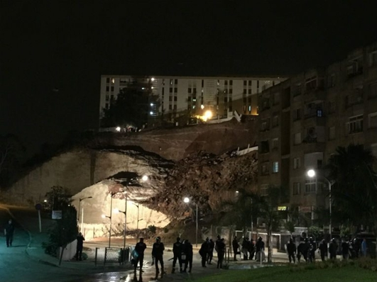
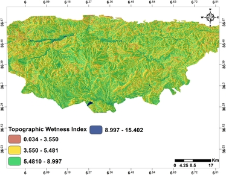
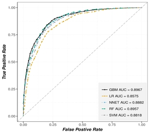

Statistical and GIS Approaches to Landslide Susceptibility Assessment and Mapping In Mila Basin (NE Algeria)
By:
Merghadi Abdelaziz
ProblemStatement
Problem Statement
-
This research is picking interest in landslide susceptibility assessment and mapping at a study area located North East of Algeria, called Mila basin.
-
This basin is well known for the variety of landslides that are (to a certain degree) non-mapped due to the unique heterogeneous properties (i.e. geology, geomorphology and so forth, that vary dramatically).
-
This dramatic variance of landslides in the basin, in term of the spatial repartition and intensity, became a very serious handicap to the urban, local, social and economic development of the basin since 1985.
-
Over the years, the ever-increasing rate of this hazard is, in particular, increasing the number of the element at risk exposed to landslides, especially at urban zones. As consequence, an increase in the economic burden associated with landslides damages it became a major issue for the local development.
-
Over the year, these burdens trigger a reaction-chain of two separate issues:
-
Stable areas are becoming more expensive for landlord and projects development.
-
Constructions in inadequate terrains and/or soils increase the overall expenses and the project budget by the exposure of such constructions to landslide and land instabilities.
-
Problem Statement
-
For these reasons, landslide mitigation processes became an absolute necessity that mandate assessing landslides susceptibility in a systematic, fast and evolving ways using models that are capable of anticipating the overall patterns of this phenomena and thus better understanding and evaluating the overall damages and maybe future development projects.
-
Despite the several remedial projects that have been carried out over the years, the effect of landslides in term of damages is still persisting and sometimes even worse due to the fact these remedies actually focus on:
-
Treating the symptoms of the landslides instead of the issue itself without considering soils intrinsic properties.
-
Randomly patching site-specific and in-situ related issues.
-
Relying on subjective expert-opinion which objectively incomprehensible.
-
Focusing on expensive and classic methods that are limited either in scope or spatial and temporal extent.
-
-
Yet, these remedies tend to ignore:
-
The overall landslide patterns behaviors.
-
Recent advancement in computer science and the new innovative state-of-the-art landslide models.
-
Problem Statement
-
Overall, this research will try to implement statistical-based modeling for landslide susceptibility assessment and mapping in GIS compatible environment at Mila basin as a case study by relying on Machine learning using state-of-the-art Computer Science models and algorithms instead of well documented and elaborated conventional and traditional approaches for landslide susceptibility.
-
Moreover, it is important to note that this research will focus on the process of modeling and assessing the landslides in the study area, whereas landslide phenomenology, evolution process, triggering mechanism, landslides conditioning and triggering factors are out of the scope of this analysis because of being well presented and discussed in number of research literatures and investigation campaigns.
-
One important research hint is that landslide typologies observed in the study were diverse and entirely different, despite landslide occurrences are mostly linked to Tertiary formations. For this reason alone, it was advised to assess only one landslide type at a time, and eventually combine these separate assessments later on as suggested by Van Westen et al. (2006). Therefore, the focus was substantially giving to “slides” landslides.
TheoreticalBackground
Landslide Phenomenology
Definitions and Scope
Landslides
Landslides are denoted as a gravitational downward and outward mass-movements of different slope-forming materials, developed along predefined surfaces that are widely known as slip-surfaces, on which propagate throughout the mass and clearly separate intact bedrock material from the moved material above.Landslides
-
Morphologically an ideal landslide consists of (from top to bottom) crown and head separated by scrap; the main body, channeled by flanks; foot terminated by a toe; depletion zone and accumulation zone capturing upper lower portions of the landslide.
-
Landslides develop mostly in slopes either natural or engineered and can vary in terms of size and the affected area.
Slopes stability
-
Slopes stability is maintained and determined by the equilibrium of two driving forces that act upon the slope.
-
Displacement is irreversible deformation that will take place if resisting forces are succumbed by driving forces.
-
The driving forces involve:
-
increasing of slope weight or shear stress (i.e. via water saturation, adding load or rearranging of the slope geometry).
-
loss of support (i.e. via erosion and rearranging of the slope geometry).
-
dynamic influences.
-
-
On the opposite, resisting forces are represented by:
-
shear strength and cohesion of slope materials.
-
as well as friction along a slip-surfaces.
-
-
which all further depend on the nature and condition of the slope materials, but as well on the slope morphology and geometry (i.e. steepness, elevation, curvature etc.).
Conditioning factors
Conditioning factors are the feature sets, variables or parameters that may influence slopes stability by influencing either directly or indirectly the driving and/or resisting forces. These factors are able to provide technical background on the landslides occurrences.
Triggering factors are the feature sets (variables or parameters) that once the terms of slopes failure are reached and satisfied, the landslide process unfolds under the influence of one of these different factors or by their combination.
-
It’s important to note that according to Cruden and Couture (2010), conditioning and triggering factors are regrouped into four categories , i.e. geological, morphological, physical and human-induced factors, as given in Table below.
-
However, it may not be mandatory to include all factors in each landslide assessment it solely depends on a variety of parameters (e.g. the case study where few or more factors can be used), as explained by Soeters and van Westen (1996).
A brief list of landslide conditioning and triggering factors
| Geological Factors | Morphological factors |
|---|---|
| Plastic weak material | Tectonic uplift |
| Sensitive material | Volcanic uplift |
| Collapsible material | Glacial rebound |
| Weathered material | Fluvial erosion of the slope toe |
| Sheared material | Wave erosion of the slope toe |
| Subterranean erosion (solution | piping) |
| Deposition loading of the slope or its crest | Glacial erosion of the slope toe |
| Adversely oriented mass discontinuities | Vegetation removal |
| The contrast in permeability and its effects on groundwater contrast in stiffness | Adversely oriented structural discontinuities |
A brief list of landslide conditioning and triggering factors (continue)
| Physical factors | Human Induced Factors |
|---|---|
| Intense, short period rainfall | Excavation of the slope or its toe |
| Rapid melt of deep snow | Loading of the slope or its crest |
| Prolonged high precipitation | Drawdown (of reservoirs) |
| Rapid drawdown following floods, high tides or breaching of natural dams | Mining and quarrying |
| Earthquake | Defective maintenance of drainage systems |
| Volcanic eruption | Water leakage from services |
| Breaching of crater lakes | Vegetation removal |
| Thawing of permafrost | Irrigation |
| Freeze and thaw weathering | Creation of dumps of very loose wastes |
| Shrink and swell weathering of expansive soils | Artificial vibration |
Landslide classification
-
The existing landslide classification system (is convention based on the accordance that every landslide could be classified and formulated by Varnes (1978)) rely on combining principally material and movement type, complemented with the estimation of the activity state and velocity.
-
The scheme was set up according to features that may be observed at once or with the minimum investigation, and without any reference to the causes of the landslide.
Landslide classification
Landslide materials define and describe the type of the displaced material in the landslide before it was displaced and they are being classified as follows:
Displacement mechanism defines the landslide movement typology, which identified as six kinematical distinct types:
Landslide classification
- In the end, by combining the two or more terms the overall classifications would be, for example, Rock-fall, Rock topples, Debris-slide, Debris-flow, Earth-slide, Earth-spread,…,etc.
| Type of movement | TYPE OF MATERIAL | |||
|---|---|---|---|---|
| Bedrock | Engineering Soils | |||
| Predominantly coarse | Predominantly fine | |||
| Fall | Rock fall | Debris fall | Earth fall | |
| Topples | Rock topple | Debris topple | Earth topple | |
| Slides | Rotational | Rock slide | Debris slide | Earth slide |
| Translational | Rock slide | Debris slide | Earth slide | |
| Lateral spreads | Rock spread | Debris spread | Earth spread | |
| Flows | Rock flow | Debris flow | Earth flow | |
| (deep creep) | (soil creep) | Earth flow | ||
| Complex | Combination of two or more principal types of movement | |||
Susceptibility HazardVulnerabilityRisk
Landslide susceptibility
"a spatial probability of landslide occurrence which analyses and handle the spatial distribution and the magnitude estimation of a landslide which may or may not potentially occurs in a given area”.
-
The landslide magnitude can be expressed by variant landslide descriptor such as total area, volume, relative displacement or velocity…etc.
-
However, the susceptibility is an explicitly one single component that handles the spatial probability in purely spatial frame, with no temporal component.
-
This introduces other terms as potential complements (sometimes partly match) to the term “landslide susceptibility”, such as landslide potential, sensitivity, relative hazard, total landslide density and so forth.
Landslide hazard
“the probability of damaging and/or landslide occurrence in given an area within a given period of time resulting in temporal-spatial probability which also known as the probability of recurrence ($P_t$)”
-
Landslide hazard usually considered as the temporal extension to the space component of the susceptibility.
-
This explains the confusion between hazard and susceptibility. However, as long as the temporal component is noticeable a distinction can be made.
-
It should be noted that according to Lee and Jones (2004), susceptibility can be depicted as a special case of the hazard in form of a single stack of single dimension instead of a stack of dimensions (time-series).
The Element at Risk
The Element at Risk (ER) is the ensemble of any entity or component of the terrain such as human personal, settlements, goods, equipment’s, infrastructure or even the environment that are potentially affected or endangered by a susceptible damaging landslide hazard.
-
It may involve the following (but not everything):
-
Natural hazard exists only is there exist an element at risk pre-subjugated, or exposed to a potentially by damaging natural event or phenomena. However, natural phenomena remain natural event and/or phenomena unless it there’s an element at risk present endangered.
Vulnerability
Vulnerability (V) is the measure of exposure toward the hazard by expressing the potential exposure damages, which gives the possibility to quantify the degree of loss of an element at risk within the affected or endangered area.
-
Depending on the element at risk, the vulnerability can vary spatially, temporally and individually and even subtypes could be derived for vulnerability at hand.
-
The vulnerability is important parameters to estimate the risk.
Risk
Risk (R) can be formulated using Vulnerability and it’s denoted as a measure of landslide occurrence probability by taking into account the severity of its effects.
-
In reality, risk comprehension is difficult to conceptualize considering the fact that it resides in the future, especially to for planning and decision making processes as those require a pre-planning estimation to be able to act upon the risk in advance before disasters strike.
-
Additionally, while susceptibility and hazard analysis are not influenced by the choice of the element at risk, Risk itself is and could be categorized and further segregated into different categories according to the element at risk or even the process at hand.
Landslide susceptibility map
Landslide susceptibility map (LSM) contains a subdivision of the terrain in zones that have a different spatial likelihood that landslides may occur.
-
The likelihood may be indicated either qualitatively (as high, moderate low, and not susceptible) or quantitatively (e.g. as the density in number per square kilometers, or area affected per square kilometer).
-
Landslide susceptibility maps should indicate the zones where landslides have occurred in the past and where they may occur in future and possibly also the run‐out zones.
Landslide inventory
Landslide inventory is a collection of landslide features in a certain area for a certain period, preferably in digital form with spatial information related to the location (as points or polygons) combined with attribute information.
-
These attributes should ideally contain information on the type of landslide, date of occurrence or relative age, size and/or volume, current activity, and causes.
-
Landslide inventories are either continuous in time or provide so‐called event‐based landslide inventories, which are inventories of landslides that happened as a result of a particular triggering event (rainfall, earthquake).
Landslide Assessment
Definition
“systematic process of gathering of the available or potential information’s, processing and/or modeling using those information’s and formulate (forming) a judgment about landslides in a transient work-flow”.
Concepts
The work-flow usually consists of:Assumptions
Modeling Approach
-
Based on model’s predictability we can separate models into two distinct and different cases:
-
Predictive models
-
Non-Predictive models
-
-
On the other hand, based on the method of treating and handling the landslide assessment, we can denote:
-
Direct methods
-
Indirect methods
-
Modeling Approach
-
Heuristic or Expert-driven approach
-
Physically-based or Deterministic approach
-
Statistical approach
Heuristic or Expert-driven approach
is an expert’s opinion-driven approach of weighting conditioning factors that relate to a landslide inventory in order to determine landslide zonation. The weighting process is achieved through hierarchical leveling process of the landslide conditioning factors.
Physically-based or Deterministic approach
highly focus on quantitatively generating an index called “stability index” by calculating the “safety factors”. This involves some complicated evaluation of safety factor that required detailed measurement of a handful of parameter’s that influence slopes.
Statistical approach
-
statistical approach in particular is able to extracts and obtain a relationship that relates landslide occurrence to the conditioning factors very efficiently for large scale analysis.
-
depending on data availability it may relate the values, distributions, aggregations and other data features, which introduce an objective prognostic dimension to the implemented model.
-
if an advanced methods such as Machine Learning (ML) is implemented which, can introduce more depth to statistical approach by incorporates a broad range of complex learning procedures that are effective in solving problems of landslides such as susceptibility assessment.
-
This modeling capability can be highlighted in three main areas:
-
The system’s deterministic model is computationally expensive and ML can be used as a code accelerator tool.
-
There is no deterministic model but an empirical ML-based model can be derived using the existing data.
-
Classification problems.
-
Summary of the available landslide assessment modeling approaches
| Modeling approach | Description Summary |
|---|---|
| Heuristic or expert-driven | Use thematic data (variables such as geological, geomorphological, Land use, infrastructure and so forth) and suffer from uncertainty related to the subjectivity of the practitioner in both, data preparation and modeling itself rending the approach more of “opinion-oriented” method. |
| Statistical | Can suffer from uncertainty due to the data preparation, but the tendency of using advanced techniques, such as Machine Learning algorithms, might be helpful due to their capability of canceling-out these sources of uncertainty. |
| Physically-based or Deterministic | Regard only the simplest mechanisms and introduce numerous assumptions into the modeling (Montgomery and Dietrich, 1994), thus their uncertainty is relatively high. In regional scales implement such approach is not feasible. |
Casestudy
Geography
-
Mila Basin is located between longitudes of $5^∘ 55’15.44″E$ and $6^∘ 49’42.19’E$, and latitudes of $36^∘ 36’39.01″N$ and $36^∘ 11’6.82″N$.
-
covering an area of approximately $2760 km^2$ distributed over 42 municipalities.
-
Geographically, the study area is fully surrounded by mountain ranges such as M’Cid Aicha and Sidi Driss from the North; Djebel Ossmane and Grouz by the South; Djebel Akhal, Chettaba and Kheneg from the East; and Djebel Boucherf and Oukissene by the West.
-
The study area, is technically a high elevated basin (mean elevation > 500 m).
Landuse and Vegetation
-
Landuse is mostly for bare lands, cereals crops or wild herbs.
-
This low-density vegetation is making the basin a hotspot for agriculture investments and farming industry (i.e. cattle breeding, poultry, stock farming…etc.).
-
However, such vegetation accelerates land degradation and instabilities by soil erosions.
Climate
-
In Mila basin, usually, the wet season is relatively short compared to a longer dry season. The local climate can be divided into two separate entities:
-
Semi-arid with a mild winter denoted by significance difference in temperature (reaching $40^∘C$ and below $0^∘C$ during summer and winter, respectively) and reaching an average of 500 mm/year.
-
Sub-humid fresh climate (typical for a mountainous landscape) surrounding the first entity and denoted by relatively dry and hot dry season, fresh and humid wet season. The precipitation mean is fluctuating between 900 and 1200 mm/year.
-
Hydrology and Hydrogeology
-
The study area, is technically part of much larger watershed called “Kébir Rhumel”.
-
Mila basin is characterized by asymmetrical elongated geometrical form (along the East-West direction) drained by a dense and hierarchical hydrographic network in N-S direction depending on the stream.
-
In terms of hydrology, the hydrographic network streams are mostly depleted of water during the dry season.
-
During wet season everything change and the overwhelming flow highly contribute to soils erosion.
-
This case in particular, exposes human settlements and constructions near the hydrographic network streams to risk of land instabilities.
Hydrology and Hydrogeology
-
from a hydrogeological perspective, the study area does not possess any important aquifer.
-
However, theoretically there exist formations with to formulate and (or be) aquifers for ground water bodies such as:
-
Quaternary formations with mainly Alluvium deposits.
-
Sand, sandy and/or sandstone deposits available in the Mio-Pliocene formations, especially if it is deposited in lenses.
-
Lacustrine limestone’s have a high potential of retaining high capacities of water.
-
High infiltration zones such as shear zones (Major tectonic accident like faults), are suitable areas for water infiltration and seepage where different springs and resurgences can upsurge randomly (frequently observed during foundation excavation for infrastructure project, i.e. Beni Haroun dam, RN27 and RN79 maintenance…etc.).
-
Seismicity
-
Seismicity in the study area is moderate according to CRAAG (Le Centre de Recherche en Astronomie Astrophysique et Géophysique).
-
Mila basin is located within Zone II a, and is characterized by moderate seismic activities.
-
Moreover, the basin has suffered previously in multiple occasions from various intensive seismic events reaching VIII-IX intensity and varies in terms of magnitude.
-
But overall, the upper parts of the basin are previously effected by seismic activities in the past.
Geology
-
the study area belongs to a paleogeographic domain known as “domaine tellien”, which is technically, the oriental segment of a “chaîne” formally known as “chaîne des maghrébides”.
-
More specifically, a larger neogene basin known by the “Constantinois basin” encompasses the study area.
-
Essentially the local geology of the study area consists of different lithostratigraphic units and can be summarized into two groups, called “series”.
-
Substratum/Bedrock series.
-
Post-nappes series.
-
Geology
| Unit | Period | ||
|---|---|---|---|
| Post-nappes | Quaternary | Alluvium, colluvium, scree, detritus deposits and slopes formations | |
| Neogene | Predominantly detritus | ||
| Substratum | Paleogene | Eocene | Limestone, cherty limestone, and platted marls. |
| Paleocene | Opaque to somber marls | ||
| Cretaceous | Upper and Mid-Upper Cretaceous | Marl dominance | |
| Lower Cretaceous | Mainly marly limestone and neritic limestone | ||
| Jurassic | Mostly thick carbonate formations | ||
| Triassic | Evaporitic and clayey deposits. | ||
-
Substratum/Bedrock series, which formulate both the lower base and the bedrock of the basin and consist of Triassic to Paleogene formations.
-
Post-nappes series constitute a cover to the bedrock series and consist of Neogene to Quaternary formations. These series, in particular, were slightly affected by recent neotectonic deformations.
Geology
-
In term of tectonic activities, the study area shows a tectonic complexity due to some severe conjugation of folds, faults, and thrusts of different ages and styles that are the results of two main tectonic events.
-
The first phase was the “Atalsic phase”, which is responsible for forming major recumbent fold structures oriented in NE-SW direction.
-
The second was the “Alpine phase”, which is responsible for breaking and sliding existing formations one over the other to form gigantic thrust faults, which resulted in thrust belt of structures oriented in N-S direction.
-
According to Coiffait (1992), there exist two general systems of lineaments for the basin based on the orientations of the structures generated by the aforementioned major tectonic events:
Geomorphology
-
Geomorphological speaking, Mila basin is composed of multiple terrains of carbonate formations emerging deep within the existing heterogeneous neogene formations.
-
These structures are the result of the tectonic heritage of the pre-disposition (i.e. pre-sedimentation) of the neogene detritus formations.
-
Such configuration is responsible for the morphological heterogeneous terrains in term of the observed spatial morphological entities.
-
For example, mountainous landscape of ridges and hills that encompass rugged channels and pits is the most observed landscape.
-
This prominent pattern is generally stretching over large proportions, especially northern parts of the study area where the terrains elevate rapidly.
Geomorphology
-
According to PDAU (Plan Directeur d’Amenagement et d’Urbanisme) reports, this prominent landscape is essentially characterized by reddish hills and ridges with hummocks and/or undulated terrains of bare to less vegetated lands.
-
During, the wet season, a substantial green vegetation covers these terrains, whereas, during the tillage period only the reddish brown color of the neogene formations (i.e. clay and marl), is noticeable.
ResearchWorkflow
Overall Research Workflow

Overall Research Workflow
Geospatial Database
-
Constructing the geospatial database is one of the most crucial steps in a successful landslide susceptibility modeling. This process is usually consist of constructing:
Inventory Map
-
A detailed landslide inventory map has been compiled from 1985–2017 with only slide failure types have been elaborated using mainly:
-
On the other hand, the non-landslide samples were easily obtained by random sampling a unique 578 sample site from public stability maps available at DUC using PAW and PDAU.
Inventory Map

Landslide Examples
Landslide Examples
Landslide Examples
Conditioning Factors
-
In susceptibility analysis, landslide conditioning factors need to be: Operational, Complete, Non-Uniform, Measurable, Non-Redundant.
-
However, the selection process of landslide factors is very subjective comes with difficulties (i.e., the study case, scale of the analysis, and data availability, general guidelines for GIS-based studies…etc.).
-
The conditioning factors were selected for this case study based on:
Geo-morphometric Data
-
Geo-morphometric or topographic data parameters were generated from Digital Elevation Model (DEM) of the study area at near 30 meters cell resolution from NASA Shuttle Radar Topography Mission Global 1 arc second (SRTMGL1) mission.
-
The geomorphometric parameters used in this case study are listed as follows:
Altitude
-
Altitude a float raster.
-
suggesting that the linear increase in potential energy with altitude is associated with higher susceptibility to landslides in the higher elevated grounds.
-
It actually, represents the DEM of the terrain, described earlier.
Slope angle
-
Slope angle (Slopes) is a float raster.
-
Slope angle is highly important due to the fact that slope stability is directly related with landslide phenomenology (i.e. direct physical relationship).
-
If the slope angle is ($\theta$), then the greater ($\theta$), the higher the possibility of slopes instability and vice-versa.
Slope aspects
-
Slope aspects (Aspects) is a float raster.
-
Slope aspects refers to the spatial exposure of the ground elements (e.g. azimuth) by controlling the micro-climatic parameters such as:
-
exposure to sunlight.
-
wind.
-
rainfall intensity.
-
slope material properties.
-
Landforms
-
Landforms is a float raster.
-
Landforms derives a classification for the landscape based on three-part geometric signatures (i.e., slopes, convexity and surface texture) as the most common form of landslide progression on the slope.
Hydrological Data
-
Water in general, is undoubtedly plays a primordial role in the triggering process of landslides and decrease slopes stability by effects such as:
-
Increasing or decreasing the shear strength, cohesion, permeability and the overall mass of the slope.
-
Weathering of slopes materials.
-
Eroding of slopes footing.
-
Saturating slopes.
-
-
These effects, influence slopes stability balance and can either increase or decrease landslides depending on water presence.
-
Thus, the following parameters were used to express the hydrological effect on the landslide susceptibility in the study area:
Rainfall
-
Rainfall is a float raster.
-
Rainfall was generated from the Annual Mean of Precipitation (AMP) for the period of 1985 to 2017, using the Inverse Euclidean Distance Weighed (IDW) method.
-
persistent periods of intense to moderate rainfall, where a high amount of water runoff water infiltrate and saturate formations and soils located beneath slopes (especially steep slopes, and can also introduce groundwater levels fluctuations depending of the amount of water infiltrated).
-
On the other hand, short and intense to moderate rainstorms and precipitations, less amount of water infiltrated deep underground, but affects slope stability indirectly by an intensive erosive processes generated by the high amount of dissipated water on the surface ground.
-
Topographic Wetness Index
-
Topographic Wetness Index is float raster.
-
TWI pinpointing the effect of local topography on certain locations and the size of the saturated source area of run-off generation by defining terrain retention (i.e. moisture distribution), which is correlated with the hydrogeological conditions, that influence surface run-off and infiltration.
Distance to Hydrographic Network
-
Distance to Hydrographic Network is a float-buffer raster.
-
Distance to Hydrographic Network introduces the influence of linear erosion on the slope stability.
-
Foregoing discussion suggests that areas closer to the stream lines are more affected than remote ones, thus buffering out the landslide susceptibility toward the ridges of local watersheds.
Geological Data
-
Geological data for the study area were compiled from a total of seven hard-copy maps covering the study area and each is 1:50000 scale provided by ASGA (L’Agence du Service Géologique de l’Algérie).
-
These maps were further simplified to meet the requirements of this case study . Therefore, the generalization to a raster map with 30m resolution was justifiable.
-
The map was also used to derive the synthetic data such as the Euclidean distance buffer to geological structures.
Lithology
-
Lithology is a discrete (i.e. categorical) raster.
-
Lithology represent the outcropping lithology derived after the geological maps, as mentioned above.
-
The map depicts 7 lithological units namely, Alluvium, Claystone, Colluvium-Detritus Deposits-Scree, Limestone, Marl, Neogene Complex, and Sandstone that are different in their physical and mechanical behaviors. Thus, differently prone to instabilities.
Stratigraphy
-
Stratigraphy is a discrete raster
-
Stratigraphy that represent the stratigraphy of the outcropping lithology derived after geological map, as mentioned above.
-
The map depicts 7 chronostratigraphic units namely, Quaternary, Neogene, Paleogene, Upper Cretaceous, Upper-Mid Cretaceous and Lower Cretaceous and Triassic-Jurassic.
Distance to Faults
-
Distance to Faults is a float-buffer raster.
-
Distance to Faults represent the distance from the available geological structures such as faults and joints in the geological map using IDW. Since faults and joints, were considered as zones of weakest shear resistance (limited only to a residual shear resistance) and also affected by the infiltrated water and fill material, it is logical to assume that instabilities are more prone in the areas closer to these structures.
-
In more seismically active areas such parameter could be much more appreciated since the shear resistance faces further effects, related to the fault dynamics.
Geotechnical Data
-
Geotechnical data were directly from obtained Mila and Constantine local agencies, i.e. municipalities, at 30 meters resolution.
-
Geotechnical data data vary in term of the overall influence on landslide occurrences, but certainly, introduce relative interpretation on the geotechnical context of the landslides distribution patterns at the study area.
Soil Textures
-
Soil Textures a discrete raster.
-
Soil Textures represents the available soils units available on the study area according to the relative proportion of sand, silt, and clay content.
-
The soil textures types were assigned according to USDA54 classification and 6 soils units that are different in their physical, mechanical and geotechnical behavior were obtained, i.e. Sandy Clay, Clay Loam, Silty Clay Loam, and Sandy Clay Loam.
Depth to Bedrock
-
Depth to Bedrock is float raster.
-
epth to Bedrock forms one of most the important factors for assessing the stability of the soil and landslide susceptibility of the land.
-
With the increase in soil depth to bedrock, the tendencies of the soil to absorb moisture also increase. Thus, reducing runoff rate. Hence, shallow soil is considered to be more unstable and prone to landslide than the deep soil.
Bulk Density
-
Bulk Density is float raster
-
Bulk Density in general have tight relationship with soil properties, such as soil textures and depth to bedrock, especially in areas that are affected by landslides where this parameter can help in understanding the interaction between the soil structure and the geotechnical behavior of the slopes.
Environmental Data
-
Environmental information’s particularly regarding parameters that may influence landslides slopes stabilities and landslide distribution.
-
These information’s, beside natural environment oriented information’s, are human-related one way or another, and it’s rarely incorporated in landslide susceptibility analysis, due various reason (e.g. the lack the data.
-
The following parameters were used to express the environmental effect on landslide susceptibility in the study area:
Landuse
-
Landuse is a discrete raster.
-
Landuse is considered as one of most influential parameters on landslides occurrence. Theoretically, barren land and shifting cultivation are more prone to landslides than other landuse unit.
-
It could be happened because there is no deep root which can hold the soil. Contrarily, forest areas tend to decrease the landslide occurrences due to the natural anchorage provided by the tree roots.
-
Landuse classes are categorized into Artificial Surfaces, Forests, Grasslands, CropLand and Bareland.
Soil types
-
Soil types is a discrete raster.
-
Soil types represent the available soils units available on the study area. The map depicts 6 soils units, i.e. Calcisols, Cambisols, Luvisols, Leptosols, Podzols, Regosols, Vertisols.
-
These units are drastically different in their water retention and root cohesion behaviors. Thus differently prone to erosion, which directly and/or indirectly instabilities.
Distance to Roads
-
Distance to Roads is a float-buffer raster.
-
Distance to Roads represent the distance from the roads network using IDW in SagaGIS.
-
Human induced factors may raise the probability of landslide occurrences. Cutting the toe of steep slope and filling along the road are the common human activities on the hilly areas which increase the susceptible area to landslide.
-
It is convinced; when the many landslide events were near by cutting road area (e.g. RN 79a and RN27). Therefore, the best way to contain the effect of road factor in landslide study is by making a buffer on the upslope part.
Analyzing and Optimizing Landslide Conditioning Factors
-
It’s common for input datasets used in landslide susceptibility analysis to have high correlation among certain conditioning factors that lead to a faulty modeling with erroneous system analysis.
-
A possible solution can be performing a multicollinearity analysis on the selected the conditioning factors.
multicollinearity (also collinearity) is a phenomenon in which one predictor variable in a multiple regression model can be linearly predicted from the others with a substantial degree of accuracy
- To detect/quantify multicollinearity among variables, PCC can be performed, but in most cases, PCC are not usually sufficient, then VIF is implemented.
PCC matrix depicts the correlation coefficients between all the possible pairs of values in a table. It used to identify/visualize patterns in the data
VIF quantifies the extent of correlation between one predictor and the other predictors in a model. It is used for diagnosing collinearity/multicollinearity
Training And Testing Datasets Partitioning

-
In this case study, the input dataset was randomly resampled into 5 times repeated 10 k-folds cross-validation approach, aimed at optimizing models hyper parameters and optimizing the final models.
-
It’s important to understand that the implemented resampling approach is a trade-off in term of speed, accuracy, computational cost and complexity, but also effective it reduces:
-
The variance introduce by simple k fold cross validation.
-
The split randomness that comes with holdout-split resampling (test-train split).
-
Training And Testing Datasets Partitioning
-
This would allow the input dataset to be used for three different purposes:
-
Tuning models hyperparameters.
-
Train models with this subset using after optimal parameters are found.
-
Models validation, assessment, and comparison.
-
-
It is important to mention that the training area has been selected by sampling instances randomly and uniformly throughout the area.
Models Implementation and Configuration
Implemented Models
Random Forest
-
Random Forest is a supervised classification algorithm and is an ensemble approach to DT models such that each tree fits a data subset sampled independently using bootstrapping (Breiman et al., 2003; Breiman and Cutler, 2004).
-
RF from the name itself is composed of many individual DT models, hence the use of the term ‘forest’ (Figure 11).
-
RF is known to provide a robust accuracy rate with respect to outliers in predictors due to the use of random selection at each split node depending on two data objects, namely, Out-Of-Bag (OOB) and proximities (Breiman, 2001).
Gradient Boosting Machine
-
Gradient Boosting Machine (GBM) or simply Gradient boosting is an ensemble of weak learners, namely, regression trees that benefit from boosting by adding weak learners using a functional gradient descent.
-
The rationale behind GBM is that the learning process consecutively introduces weak learners using a functional gradient descent in stage-wise additive approach sequentially allowing the algorithm to enhance the overall accuracy simply by readjusting previous error terms when new weak learners are added.
Logistic Regression
-
Logistic regression (LR) is a particular case of the generalized linear mode configured to provide a binary form of result. LR is named after its core function, the logistic function (also called sigmoid function).
-
Basically, logistic regression relates the probability of landslide occurrence to a link function (in this case “logit”) assumed to contain the conditioning factors on which landslide occurrence may depend, where the relationship between the occurrence and its dependency on conditioning factors can be expressed by the following (Equation below):
$$\hat{P}=1/(1+e^(-z) )=e^z/(1+e^z)$$
- where $\hat{P}$ is the probability of a landslide occurrence and has a range of [0, 1] on an S-shaped curve; $z$ is a linear fitting equation that involves the supplied set of landslide-related variables in the form of the following equation (Equation above):
$$Z = b_0 + b_1 X_1 + b_2 X_2 + ⋯ + b_n X_n$$
- where $b_0$ is the intercept of the model; $b_n$ is the partial regression coefficients; and $X_n$ is the conditioning variable.
Artificial Neural Network
-
The ANN is set of processes inspired by existing pattern recognizance system existing in biological organisms like human brains (Ripley 2007).
-
The basic idea of ANN is MLP (i.e. multi-layer perceptron) which consist of set hidden nodes known as “neurons” interconnected in predefined paths. The MLP are known as “universal approximators”.
-
The multidimensional input information’s are transformed using a set of non-linear and/or linear transformations known as the “activation function” to assimilate certain format (i.e. -1 to 1, 0 to…etc.). Afterwards, the ANN trained using gradient descent that will optimize the cost function (usually predefined). The model considered trained only if the gradient descent converge to global optima.
Support Vector Machine
-
Support vector machine (SVM) is one of the new mathematics tools, which is used as a universal constructive learning procedure based on the statistical learning theory rather than loose analogies with natural learning systems.
-
SVMs provide non-linear solutions to regression and classification problems by transforming the input variables in a large-dimension space, whose inner product is given by positive definite kernel functions, then trained using dual optimization techniques with constraints.
-
Typically, SVMs are designed for two-class problems where both positive and negative objects exist. For two-classes classification problems, SVMs seek to find a hyperplane in the feature space that maximally separates the two target classes.
Models Optimization
-
In rare cases, hand-tuning models hyperparameters are enough but in general, there exist methods to do such a task; i.e., Grid search, Random search, Gradient-Based Optimization.
-
However, those methods are widely used and still considered as the main option due to the simplicity and ease of their implementation.
-
Yet, they produce very poor results that lead to:
-
costly evaluations (especially when the computational budget is limited).
-
incorrect assessments about the implemented models, whether they are genuinely bad or simply badly tuned.
-
Models Optimization
-
To avoid the aforementioned problems, we consider a state-of-art technique called Sequential Model-Based Optimization (SMBO) (also known as Bayesian optimization).
-
SMBO can efficiently optimize models by working on a strictly reduced budget for function evaluations and hyperparameters optimization of expensive black-box models.
-
Generally, better results can be achieved using SMBO in fewer experiments compared to traditional techniques (Grid search, Random search, Gradient-Based Optimization) due to:
-
the ability to reason about the quality of experiments before they are run.
-
benefiting from the “adaptive capping” to avoid long runs.
-
Model TrainingValidationComparison
-
Parametric Performance Metrics
-
Non-Parametric Performance Metrics
Parametric Performance Metrics
| No | Measure | Equation | Definition |
|---|---|---|---|
| 1 | Accuracy (ACC) | $ACC=\frac{Number\ of\ correct\ predictions}{Total\ number\ of\ predictions}$ | The proportion of landslide and non-landslide pixels that the resulting models correctly classified |
| 2 | The area under the ROC curve (AUC) | Integral over the graph that results from computing False Positive Rate (FPR) and True Positive Rate (TPR) for many different thresholds. | The probability that the classifier will correctly rank a randomly chosen landslide pixel to be more indicative of a landslide than a randomly chosen non-landslide |
| 3 | Cohen’s kappa (Kappa) | $Kappa=\frac{(O-E)}{(1-E)}$ | Measure the agreement between true classes and the classifications which refer to the ability to measure landslide models reliability by expressing the proportion of observed agreement beyond that expected by chance. |
Non-Parametric Performance Metrics
-
The Wilcoxon signed-rank test at the 5% significance level was used for each pair of models in order to detect individual differences in model performances.
-
Basically, the Wilcoxon signed-rank test relies on a null hypothesis that there is no difference between the performances of the landslide models. Then, $p.value$ and $z.values$ are calculated and used to determine the probability of rejecting or accepting the null hypothesis.
if:
-
$p.value < 0.05$
-
$−1.96 > z.value > +1.96$
-
LSM Generation and Assessment
-
Models with close or even similar performance results and they do not necessarily generate similar predictive output surface.
-
The spatial predictive output surface is critical for assessing the quality of landslide susceptibility models.
-
Overall, by performing a sufficiency analysis on the predictive output surface in the form of summary statistics (that is, landslide density distribution and the area extent covered by each susceptibility class)
-
Using these statistics it is possible to gain an insight into the model’s quality by:
-
The spatial predictive output surface details.
-
The results of the landslide distribution analysis.
-
-
The sufficiency based on the assumption that: “a model is sufficient and accurate when there is an increase in the landslide density ratio when moving from low to high susceptible classes and high susceptibility classes cover small areas extent”.
| Susceptibility Class | Very Low | Low | Moderate | High | Very High |
|---|---|---|---|---|---|
| Probability Range | From 0 to 0.05 | From 0.05 to 0.30 | From 0.30 to 0.60 | From 0.60 to 0.75 | From 0.75 to 1 |
Results
Analyzing and Optimizing Landslide Conditioning Factors
 PCC correlogram
PCC correlogram
-
The Pearson’s correlogram values (Figure 7) are lower than the critical threshold of 0.7, which indicates high collinearity.
-
The highest Pearson’s correlation was between TWI and the Slopes at 0.54.
-
In fact, a high correlation is expected between the generated variables and the source variables (i.e., TWI, Slopes, and Altitude that were derived from the DEM).
- On the other hand, the VIF results, show that all factors should be used since the highest value is less than the theoretical critical value of 5.
Model Training
Model Evaluation and Comparison
The Overall performance results show:
-
The results obtained in this study show that all the implemented models achieved high performance (AUC > 0.88, Acc > 80% and kappa > 0.60).
-
GBM $\rightarrow$ RF $\rightarrow$ NNET $\rightarrow$ SVM $\rightarrow$ LR
-
All the models have “a substantial agreement” between the observed and the predicted landslides expressed in term of a kappa index ranging between 0.5605 and 0.6405.
-
The AUC and Acc values range from 0.8575 to 0.8967, and 0.7803 to 0.8203, respectively, indicate that all the models have “very good” predictive capabilities
ROC curves of the implemented models
Receiver Operating Characteristic (ROC) curves of the implemented models
-
However, two ensemble trees models (GBM and RF) yielded the highest prediction results compared to the others.
-
This better performance is confirmed to be statistically significant with the used Wilcoxon signed-rank test.
Model Evaluation and Comparison
-
The Pairwise results show:
-
there is a systematic difference in the performance results between each pair of models.
-
except for the GBM and RF pair, where the difference in performance was found to be statistically insignificant (that is, p-value ≥ 0.05 and −1.96 ≤ z-value ≤ +1.96, so, the null hypothesis was accepted).
-
| No. | Pairwise comparison | z.Value | p.Value | Significance |
|---|---|---|---|---|
| 1 | GBM vs. RF | −0.579 | 0.562 | No |
| 2 | GBM vs. LR | 6.111 | 0.000 | Yes |
| 3 | GBM vs. NNET | 3.606 | 0.001 | Yes |
| 4 | GBM vs. SVM | 5.266 | 0.000 | Yes |
| 5 | RF vs. LR | 6.149 | 0.000 | Yes |
| 6 | RF vs. NNET | 2.905 | 0.004 | Yes |
| 7 | RF vs. SVM | 4.025 | 0.000 | Yes |
| 8 | SVM vs. LR | 5.589 | 0.000 | Yes |
| 9 | SVM vs. NNET | −3.223 | 0.001 | Yes |
| 10 | NNET vs. LR | 5.995 | 0.000 | Yes |
Landslide Susceptibility Maps
| GBM | RF | NNET | SVM | LR |
|---|---|---|---|---|
The implemented models successfully generated susceptibility maps with a fine and smooth prediction surface.
The generated landslide susceptibility maps
-
The Overall results show:
- GBM $\rightarrow$ RF $\rightarrow$ NNET $\rightarrow$ SVM $\rightarrow$ LR
-
A positive indicator of the classification capability:
-
All models show an increase in the landslide density ratio when moving from low to high susceptible classes.
-
All models they do not show any landslide events in the “Very Low” susceptibility class or they only show a very small percentage (<1%).
-
GBM landslide susceptibility map
RF landslide susceptibility map
NNET landslide susceptibility map
SVM landslide susceptibility map
LR landslide susceptibility map
Thank you
Potential questions and details
GeneralBackground
General Background
-
The diversity in natural hazards across the country, mandate a strict and stringent protection strategy against these hazards.
-
Mila basin is particularly a unique case in Algeria. This basin is considered (and still) the most vulnerable basin in terms of landslides and floods.
-
In Mila basin, different locations were surprisingly found at critical state.
-
The economic losses instantiated by the spatial evolution of landslides generate huge burdens on local authorities, and thus slowing the local development of the basin.
-
In fact, most local agencies in Mila basin have less experience related to landslides, the preparedness and mitigation activities are not running well in many regions, despite the abundant landslides.
-
The lack of required data, landslide hazard experts, limited budget, lack of reliable susceptibility analyses and the lack of awareness of the local government agencies, are some of the reasons why the mitigation and preparedness activities are far from adequate. On the other hand, these activities are obsolete in order to reduce the effects of the landslides.
General Background
-
In reality, there’s exist different nation-wide engineering and hazard mapping projects initiated during the 80’s and One of the main purposes of landslide hazard mapping projects, is to generate landslide susceptibility maps.
-
These maps, depict the spatial probability of occurrences of landslides based on an empirical assumption and in order to generate a landslide susceptibility map there exist two possibilities:
-
Consider the already published methods and models.
-
Build and modify a model from scratch to get better-expected results due to the fact that the model will be tailored for the study area.
-
-
In spite of that, the chosen mapping method depends on data availability, financial budget, time available for monitoring and observing landslides, detailed level of the acquired data, scale analysis and the proposed models and methodology for assessing and mapping landslide susceptibility.
Objectives
Objectives #1
Address the shortage in literature for Mila basin in term of landslide susceptibility mapping through investigating, implementing, assessing and comparing prediction capability of advanced statistical-based models such as Machine Learning methods and algorithmsObjectives #2
The production of a useful landslide susceptibility mapping and assessment frameworks with a reproducible and unbiased optimization process and exploit the possibility of automating the process of landslide susceptibility mapping or landslide mapping by taking advantage from available resources at the local agencies and open source community.Objectives #3
Standardizing the procedure regarding landslide assessment in the study area (i.e. acquisition, scaling, pre-processing, optimization, and evaluation procedures) by preparing custom and reproducible algorithms for specifically the purpose of landslide assessment in the study area using GIS.Objectives #4
Implementing a variety of known models and techniques that rely on statistical modeling approaches, but also experimenting with the state-of-the-art techniques, advanced methods and unprecedented solutions for landslide assessment using GIS.Objectives #5
Evaluating models performance and the results obtained using the most appropriate procedures and methods, in favor of gaining a qualitative and quantitative descriptors evaluations of the model's performance using GIS in combination with statistical tools.Objectives #6
Address the issues of availability, visualization, and publishing of the detailed results in the form of reproducible, reliable, high resolution, generic landslide susceptibility map per each model using GIS, and web-GIS and estimating their applicability for better environmental management and for reducing the victims and damages caused by future landslide occurrences.Thesis Outline
Outlines
-
Chapter 1 presents a general introduction, followed by the main problematic which is the subject of the thesis.
-
Chapter 2 reports theoretical background information and the problems and issues encountered in landslide susceptibility processes.
-
Chapter 3 presents an overview of the methodologies, concepts and theories used to assess the landslide susceptibility.
-
Chapter 4 intended to provide fundamental background information’s about the case study (i.e. Mila basin).
-
Chapter 5 reports the results obtained at each step of the implemented research workflow (See Chapter 3) and Discuss it.
-
Chapter 6 concentrates on outlining the main achievements the research achieved compared to the primary underlined research objectives.
-
Chapter 7 presents general conclusions drawn from this research.
-
The Bibliography includes an extensive list of references.
-
Appendix A reports the repositories used to host the source code used to perform the analysis of this research.
-
Appendix B includes a descriptive statistical table for the landslide conditioning factors used in research.